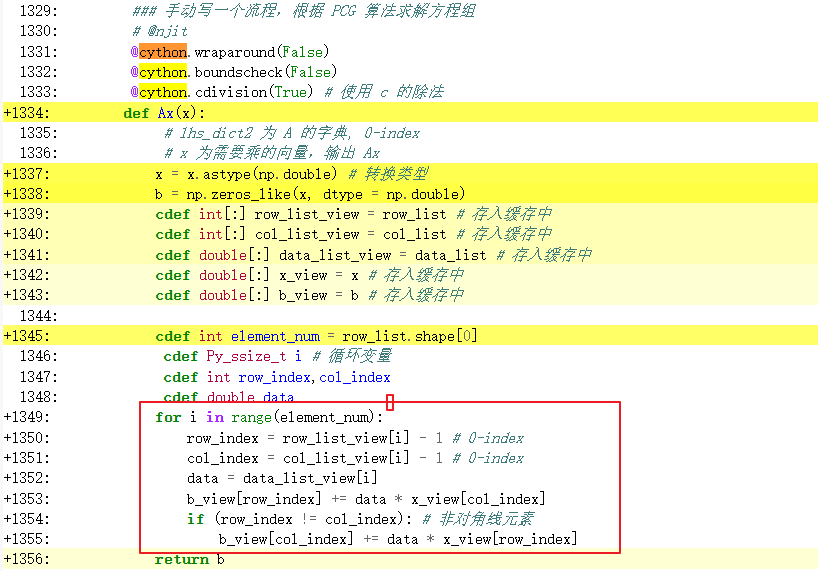

<!DOCTYPE html>


<html lang="zh-CN">


<head>
  <meta charset="utf-8" />
    
  <meta name="viewport" content="width=device-width, initial-scale=1, maximum-scale=1" />
  <title>
    python包-cython编译脚本 |  VincereZhou&#39;s blog
  </title>
  <meta name="generator" content="hexo-theme-ayer">
  
  <link rel="shortcut icon" href="/images/mojie.jpg" />
  
  
<link rel="stylesheet" href="/dist/main.css">

  <link rel="stylesheet" href="https://cdn.jsdelivr.net/gh/Shen-Yu/cdn/css/remixicon.min.css">
  
<link rel="stylesheet" href="/css/custom.css">

  
  <script src="https://cdn.jsdelivr.net/npm/pace-js@1.0.2/pace.min.js"></script>
  
  

  

<link rel="alternate" href="/atom.xml" title="VincereZhou's blog" type="application/atom+xml">
</head>

</html>

<body>
  <div id="app">
    
      
    <main class="content on">
      <section class="outer">
  <article
  id="post-python包-cython编译脚本"
  class="article article-type-post"
  itemscope
  itemprop="blogPost"
  data-scroll-reveal
>
  <div class="article-inner">
    
    <header class="article-header">
       
<h1 class="article-title sea-center" style="border-left:0" itemprop="name">
  python包-cython编译脚本
</h1>
 

    </header>
     
    <div class="article-meta">
      <a href="/posts/7e15d6ea/" class="article-date">
  <time datetime="2023-04-08T07:41:43.000Z" itemprop="datePublished">2023-04-08</time>
</a> 
  <div class="article-category">
    <a class="article-category-link" href="/categories/%E6%95%B0%E6%8D%AE%E5%88%86%E6%9E%90/">数据分析</a> / <a class="article-category-link" href="/categories/%E6%95%B0%E6%8D%AE%E5%88%86%E6%9E%90/python/">python</a>
  </div>
  
<div class="word_count">
    <span class="post-time">
        <span class="post-meta-item-icon">
            <i class="ri-quill-pen-line"></i>
            <span class="post-meta-item-text"> 字数统计:</span>
            <span class="post-count">1.1k</span>
        </span>
    </span>

    <span class="post-time">
        &nbsp; | &nbsp;
        <span class="post-meta-item-icon">
            <i class="ri-book-open-line"></i>
            <span class="post-meta-item-text"> 阅读时长≈</span>
            <span class="post-count">4 分钟</span>
        </span>
    </span>
</div>
 
    </div>
      
    <div class="tocbot"></div>


  
    <div class="article-entry" itemprop="articleBody">
       
  <link rel="stylesheet" type="text/css" href="https://cdn.jsdelivr.net/hint.css/2.4.1/hint.min.css"><p>使用 cython 编译 python 脚本。</p>
<span id="more"></span>
<h1>安装 cython</h1>
<figure class="highlight shell"><table><tr><td class="gutter"><pre><span class="line">1</span><br></pre></td><td class="code"><pre><span class="line">pip install cython</span><br></pre></td></tr></table></figure>
<p>然后查看是否安装上</p>
<figure class="highlight shell"><table><tr><td class="gutter"><pre><span class="line">1</span><br><span class="line">2</span><br></pre></td><td class="code"><pre><span class="line"><span class="meta">$</span><span class="bash"> cython -V</span></span><br><span class="line">Cython version 0.29.33</span><br></pre></td></tr></table></figure>
<h1>修改 pyx 脚本</h1>
<p>以下面的程序为例，这个程序是计算一个对称矩阵和一个输入向量的乘积，这个矩阵的上三角元素按照三元组的形式存储在 <code>(row_list, col_list, data_list)</code> 中，<code>x</code> 为输入向量，函数返回乘积 <code>b</code> 。</p>
<p>首先需要用 <code>cimport cython</code> 导入模块。</p>
<p>将 <code>row_list</code> 和 <code>col_list</code> 的数据类型定义为 <code>np.intc</code> ，与 C 语言中的 <code>int</code> 类型对应；将 <code>data_list</code>的数据类型定义为 <code>np.double</code> ，与 C 语言中的 <code>double</code> 类型对应。这里就是要保证数据类型一致，具体的 numpy 与 C 语言所有数据类型的对应关系可见官网 <a target="_blank" rel="noopener" href="https://www.numpy.org.cn/user/basics/types.html">数组类型之间的转换</a>。</p>
<p>通过网上发现 numpy.double 等同于 numpy.float64 ,  numpy.intc 等同于 numpy.int32， 证明如下：</p>
<figure class="highlight python"><table><tr><td class="gutter"><pre><span class="line">1</span><br><span class="line">2</span><br><span class="line">3</span><br><span class="line">4</span><br><span class="line">5</span><br><span class="line">6</span><br><span class="line">7</span><br></pre></td><td class="code"><pre><span class="line">In [<span class="number">1</span>]: <span class="keyword">import</span> numpy <span class="keyword">as</span> np</span><br><span class="line"></span><br><span class="line">In [<span class="number">2</span>]: np.double <span class="keyword">is</span> np.float64</span><br><span class="line">Out[<span class="number">2</span>]: <span class="literal">True</span></span><br><span class="line"></span><br><span class="line">In [<span class="number">3</span>]: np.intc <span class="keyword">is</span> np.int32</span><br><span class="line">Out[<span class="number">3</span>]: <span class="literal">True</span></span><br></pre></td></tr></table></figure>
<p><code>@cython.wraparound(False)</code> 和 <code>@cython.boundscheck(False)</code> 这两句是说不再检查循环变量 (<code>i</code> ) 的范围。</p>
<p><code>@cython.cdivision(True)</code> 是说使用 C 语言中的除法，而不是 python 的除法。注意如果是两个整数相除，C 语言的除法会取整，想要得到正确的结果，需要将一个数改为浮点数，比如将 <code>x</code> 改为 <code>&lt;double&gt;  (x)</code> 。</p>
<p>然后我们看函数内部 ，首先就是将数据类型改为与 C 语言一致，<code>x = x.astype(np.double)</code> 。然后数组对象需要放到缓存中，这样就能将 python 的数组对象转为 C 语言直接处理的对象，比如 <code>cdef int[:] row_list_view = row_list</code>（对 <code>row_list_view</code> 的处理，<code>row_list</code> 也会出现相应的改变）。标量可以直接定义，注意这里涉及数据维度的地方也需要提前定义，因为数组维度对象也是 python 对象，比如 <code>cdef int element_num = row_list.shape[0]</code> 。对于循环变量，定义为 <code>cdef Py_ssize_t</code> 。</p>
<figure class="highlight python"><table><tr><td class="gutter"><pre><span class="line">1</span><br><span class="line">2</span><br><span class="line">3</span><br><span class="line">4</span><br><span class="line">5</span><br><span class="line">6</span><br><span class="line">7</span><br><span class="line">8</span><br><span class="line">9</span><br><span class="line">10</span><br><span class="line">11</span><br><span class="line">12</span><br><span class="line">13</span><br><span class="line">14</span><br><span class="line">15</span><br><span class="line">16</span><br><span class="line">17</span><br><span class="line">18</span><br><span class="line">19</span><br><span class="line">20</span><br><span class="line">21</span><br><span class="line">22</span><br><span class="line">23</span><br><span class="line">24</span><br><span class="line">25</span><br><span class="line">26</span><br><span class="line">27</span><br><span class="line">28</span><br><span class="line">29</span><br><span class="line">30</span><br><span class="line">31</span><br><span class="line">32</span><br></pre></td><td class="code"><pre><span class="line">cimport cython</span><br><span class="line"></span><br><span class="line">row_list = np.array(row_list, dtype = np.intc)   </span><br><span class="line">col_list = np.array(col_list, dtype = np.intc)          </span><br><span class="line">data_list = np.array(data_list, dtype = np.double)          </span><br><span class="line"></span><br><span class="line"><span class="meta">@cython.wraparound(<span class="params"><span class="literal">False</span></span>)</span></span><br><span class="line"><span class="meta">@cython.boundscheck(<span class="params"><span class="literal">False</span></span>)</span></span><br><span class="line"><span class="meta">@cython.cdivision(<span class="params"><span class="literal">True</span></span>) </span><span class="comment"># 使用 c 的除法</span></span><br><span class="line"><span class="function"><span class="keyword">def</span> <span class="title">Ax</span>(<span class="params">x</span>):</span></span><br><span class="line">    <span class="comment"># lhs_dict2 为 A 的字典, 0-index</span></span><br><span class="line">    <span class="comment"># x 为需要乘的向量，输出 Ax</span></span><br><span class="line">    <span class="comment"># x = x.astype(np.double) # 转换类型</span></span><br><span class="line">    b = np.zeros_like(x, dtype = np.double)</span><br><span class="line">    cdef <span class="built_in">int</span>[:] row_list_view = row_list <span class="comment"># 存入缓存中</span></span><br><span class="line">    cdef <span class="built_in">int</span>[:] col_list_view = col_list <span class="comment"># 存入缓存中</span></span><br><span class="line">    cdef double[:] data_list_view = data_list <span class="comment"># 存入缓存中</span></span><br><span class="line">    cdef double[:] x_view = x <span class="comment"># 存入缓存中</span></span><br><span class="line">    cdef double[:] b_view = b <span class="comment"># 存入缓存中</span></span><br><span class="line"></span><br><span class="line">    cdef <span class="built_in">int</span> element_num = row_list.shape[<span class="number">0</span>]</span><br><span class="line">    cdef Py_ssize_t i <span class="comment"># 循环变量</span></span><br><span class="line">    cdef <span class="built_in">int</span> row_index,col_index</span><br><span class="line">    cdef double data</span><br><span class="line">    <span class="keyword">for</span> i <span class="keyword">in</span> <span class="built_in">range</span>(element_num):</span><br><span class="line">        row_index = row_list_view[i] - <span class="number">1</span> <span class="comment"># 0-index</span></span><br><span class="line">        col_index = col_list_view[i] - <span class="number">1</span> <span class="comment"># 0-index</span></span><br><span class="line">        data = data_list_view[i]</span><br><span class="line">        b_view[row_index] += data * x_view[col_index]</span><br><span class="line">        <span class="keyword">if</span> (row_index != col_index): <span class="comment"># 非对角线元素</span></span><br><span class="line">            b_view[col_index] += data * x_view[row_index]</span><br><span class="line">            <span class="keyword">return</span> b</span><br></pre></td></tr></table></figure>
<h1>查看修改效果</h1>
<p>Cython 程序的扩展名是 .pyx ，使用下面的命令会生成一个同名的 html ，这个文件中黄色部分就是和 python 进行交互的地方，也就是拖累性能的地方。</p>
<figure class="highlight shell"><table><tr><td class="gutter"><pre><span class="line">1</span><br></pre></td><td class="code"><pre><span class="line">cython -a *.pyx</span><br></pre></td></tr></table></figure>
<p>如果遇到提示 <code>FutureWarning: Cython directive 'language_level' not set, using 2 for now (Py2).</code> 。只需要在 pyx 文件开头增加一条注释，指明使用 python3 即可。</p>
<figure class="highlight python"><table><tr><td class="gutter"><pre><span class="line">1</span><br></pre></td><td class="code"><pre><span class="line"><span class="comment"># cython: language_level=3</span></span><br></pre></td></tr></table></figure>
<p>这里只要循环部分不是黄的，就可以了，比如上面的函数的 html 文件如下：</p>
<p></p>
<h1>使用 cython 编译 py 文件</h1>
<p>创建一个临时的 py 文件，比如 <a target="_blank" rel="noopener" href="http://setup.py">setup.py</a>，其中内容如下</p>
<figure class="highlight python"><table><tr><td class="gutter"><pre><span class="line">1</span><br><span class="line">2</span><br><span class="line">3</span><br><span class="line">4</span><br><span class="line">5</span><br><span class="line">6</span><br><span class="line">7</span><br><span class="line">8</span><br><span class="line">9</span><br><span class="line">10</span><br><span class="line">11</span><br><span class="line">12</span><br><span class="line">13</span><br><span class="line">14</span><br></pre></td><td class="code"><pre><span class="line"><span class="keyword">from</span> distutils.core <span class="keyword">import</span> setup</span><br><span class="line"><span class="keyword">from</span> distutils.extension <span class="keyword">import</span> Extension</span><br><span class="line"><span class="keyword">from</span> Cython.Build <span class="keyword">import</span> cythonize</span><br><span class="line"></span><br><span class="line"><span class="comment"># 多个文件</span></span><br><span class="line"><span class="comment"># 第一个参数 recode 是输出模块的前缀，第二个列表是所有需要编译的源文件</span></span><br><span class="line">extensions=[</span><br><span class="line"> Extension(<span class="string">&quot;recode&quot;</span>, [<span class="string">&quot;recode_so.py&quot;</span>]),  <span class="comment"># 配置需要cython编译的源文件</span></span><br><span class="line"> Extension(<span class="string">&quot;blup&quot;</span>, [<span class="string">&quot;blup_so.py&quot;</span>]),</span><br><span class="line">]</span><br><span class="line"></span><br><span class="line">setup(ext_modules=cythonize(extensions, language_level=<span class="number">3</span>))</span><br><span class="line"><span class="comment"># 里面的 language_level=3 表示只需要兼容 python3 即可, 而默认是 2 和 3 都兼容</span></span><br><span class="line"></span><br></pre></td></tr></table></figure>
<p>然后运行脚本进行编译</p>
<figure class="highlight shell"><table><tr><td class="gutter"><pre><span class="line">1</span><br></pre></td><td class="code"><pre><span class="line">python setup.py build</span><br></pre></td></tr></table></figure>
<p>在我们执行命令之后，运行成功结尾就是 <code>.so</code>。并且在当前目录会多出一个 build 目录，里面的 <code>.so</code> 文件就是编译后的文件（windows 系统中是 <code>.pyd</code> ）</p>
<p>实际使用发现，cython 不能和 numba 联合使用。</p>
<h1>参考文献</h1>
<ol>
<li>
<p><a target="_blank" rel="noopener" href="https://www.cnblogs.com/traditional/p/13213173.html">https://www.cnblogs.com/traditional/p/13213173.html</a></p>
</li>
<li>
<p><a target="_blank" rel="noopener" href="https://www.jianshu.com/p/9053dacee822">https://www.jianshu.com/p/9053dacee822</a></p>
</li>
<li>
<p><a target="_blank" rel="noopener" href="https://www.bilibili.com/video/BV1NF411i74S?p=1&amp;vd_source=584d44ba7fed271fb82848e7894a53c8">https://www.bilibili.com/video/BV1NF411i74S?p=1&amp;vd_source=584d44ba7fed271fb82848e7894a53c8</a></p>
</li>
</ol>
 
      <!-- reward -->
      
    </div>
    

    <!-- copyright -->
    
    <div class="declare">
      <ul class="post-copyright">
        <li>
          <i class="ri-copyright-line"></i>
          <strong>版权声明： </strong>
          
          本博客所有文章除特别声明外，著作权归作者所有。转载请注明出处！
          
        </li>
      </ul>
    </div>
    
    <footer class="article-footer">
       
  <ul class="article-tag-list" itemprop="keywords"><li class="article-tag-list-item"><a class="article-tag-list-link" href="/tags/python/" rel="tag">python</a></li><li class="article-tag-list-item"><a class="article-tag-list-link" href="/tags/%E6%95%B0%E6%8D%AE%E5%88%86%E6%9E%90/" rel="tag">数据分析</a></li></ul>

    </footer>
  </div>

   
  <nav class="article-nav">
    
      <a href="/posts/15c32607/" class="article-nav-link">
        <strong class="article-nav-caption">上一篇</strong>
        <div class="article-nav-title">
          
            python包-f2py使用流程
          
        </div>
      </a>
    
    
      <a href="/posts/309f8f08/" class="article-nav-link">
        <strong class="article-nav-caption">下一篇</strong>
        <div class="article-nav-title">python获得网络时间</div>
      </a>
    
  </nav>

   
<!-- valine评论 -->
<div id="vcomments-box">
  <div id="vcomments"></div>
</div>
<script src="//cdn1.lncld.net/static/js/3.0.4/av-min.js"></script>
<script src="https://cdn.jsdelivr.net/npm/valine@1.4.14/dist/Valine.min.js"></script>
<script>
  new Valine({
    el: "#vcomments",
    app_id: "yHN3kf7fHt5wvleM2DVoHLdY-gzGzoHsz",
    app_key: "RPIwmdftljIzOtAULwc7JCAp",
    path: window.location.pathname,
    avatar: "monsterid",
    placeholder: "靓仔，看完留个评论再走哇！\n只需要填入昵称和邮箱就可以了",
    recordIP: true,
  });
  const infoEle = document.querySelector("#vcomments .info");
  if (infoEle && infoEle.childNodes && infoEle.childNodes.length > 0) {
    infoEle.childNodes.forEach(function (item) {
      item.parentNode.removeChild(item);
    });
  }
</script>
<style>
  #vcomments-box {
    padding: 5px 30px;
  }

  @media screen and (max-width: 800px) {
    #vcomments-box {
      padding: 5px 0px;
    }
  }

  #vcomments-box #vcomments {
    background-color: #fff;
  }

  .v .vlist .vcard .vh {
    padding-right: 20px;
  }

  .v .vlist .vcard {
    padding-left: 10px;
  }
</style>

 
   
     
</article>

</section>
      <footer class="footer">
  <div class="outer">
    <ul>
      <li>
        Copyrights &copy;
        2019-2023
        <i class="ri-heart-fill heart_icon"></i> Vincere Zhou
      </li>
    </ul>
    <ul>
      <li>
        
        
        <span>
  <span><i class="ri-user-3-fill"></i>访问人数:<span id="busuanzi_value_site_uv"></span></s>
  <span class="division">|</span>
  <span><i class="ri-eye-fill"></i>浏览次数:<span id="busuanzi_value_page_pv"></span></span>
</span>
        
      </li>
    </ul>
    <ul>
      
    </ul>
    <ul>
      
    </ul>
    <ul>
      <li>
        <!-- cnzz统计 -->
        
      </li>
    </ul>

    <!-- 与只只在一起天数 -->
	<ul>
		<li><span id="lovetime_span"></span></li>
	</ul>
    <script type="text/javascript">			
        function show_runtime() {
            window.setTimeout("show_runtime()", 1000);
            X = new Date("03/04/2021 22:11:00");
            Y = new Date();
            T = (Y.getTime() - X.getTime());
            M = 24 * 60 * 60 * 1000;
            a = T / M;
            A = Math.floor(a);
            b = (a - A) * 24;
            B = Math.floor(b);
            c = (b - B) * 60;
            C = Math.floor((b - B) * 60);
            D = Math.floor((c - C) * 60);
            lovetime_span.innerHTML = "只只和男朋友在一起了 " + A + "天" + B + "小时" + C + "分" + D + "秒"
        }
        show_runtime();
    </script>

  </div>
</footer>
      <div class="float_btns">
        <div class="totop" id="totop">
  <i class="ri-arrow-up-line"></i>
</div>

      </div>
    </main>
    <aside class="sidebar on">
      <button class="navbar-toggle"></button>
<nav class="navbar">
  
  <div class="logo">
    <a href="/"></a>
  </div>
  
  <ul class="nav nav-main">
    
    <li class="nav-item">
      <a class="nav-item-link" href="/">主页</a>
    </li>
    
    <li class="nav-item">
      <a class="nav-item-link" href="/archives">归档</a>
    </li>
    
    <li class="nav-item">
      <a class="nav-item-link" href="/categories">分类</a>
    </li>
    
    <li class="nav-item">
      <a class="nav-item-link" href="/tags">标签</a>
    </li>
    
    <li class="nav-item">
      <a class="nav-item-link" href="/friends">友链</a>
    </li>
    
    <li class="nav-item">
      <a class="nav-item-link" href="/about">关于</a>
    </li>
    
  </ul>
</nav>
<nav class="navbar navbar-bottom">
  <ul class="nav">
    <li class="nav-item">
      
      <a class="nav-item-link nav-item-search"  title="搜索">
        <i class="ri-search-line"></i>
      </a>
      
      
      <a class="nav-item-link" target="_blank" href="/atom.xml" title="RSS Feed">
        <i class="ri-rss-line"></i>
      </a>
      
    </li>
  </ul>
</nav>
<div class="search-form-wrap">
  <div class="local-search local-search-plugin">
  <input type="search" id="local-search-input" class="local-search-input" placeholder="Search...">
  <div id="local-search-result" class="local-search-result"></div>
</div>
</div>
    </aside>
    <script>
      if (window.matchMedia("(max-width: 768px)").matches) {
        document.querySelector('.content').classList.remove('on');
        document.querySelector('.sidebar').classList.remove('on');
      }
    </script>
    <div id="mask"></div>

<!-- #reward -->
<div id="reward">
  <span class="close"><i class="ri-close-line"></i></span>
  <p class="reward-p"><i class="ri-cup-line"></i>请我喝杯茶吧~</p>
  <div class="reward-box">
    
    <div class="reward-item">
      
      <span class="reward-type">支付宝</span>
    </div>
    
    
    <div class="reward-item">
      
      <span class="reward-type">微信</span>
    </div>
    
  </div>
</div>
    
<script src="/js/jquery-2.0.3.min.js"></script>


<script src="/js/lazyload.min.js"></script>

<!-- Tocbot -->


<script src="/js/tocbot.min.js"></script>

<script>
  tocbot.init({
    tocSelector: '.tocbot',
    contentSelector: '.article-entry',
    headingSelector: 'h1, h2, h3, h4, h5, h6',
    hasInnerContainers: true,
    scrollSmooth: true,
    scrollContainer: 'main',
    positionFixedSelector: '.tocbot',
    positionFixedClass: 'is-position-fixed',
    fixedSidebarOffset: 'auto'
  });
</script>

<script src="https://cdn.jsdelivr.net/npm/jquery-modal@0.9.2/jquery.modal.min.js"></script>
<link rel="stylesheet" href="https://cdn.jsdelivr.net/npm/jquery-modal@0.9.2/jquery.modal.min.css">
<script src="https://cdn.jsdelivr.net/npm/justifiedGallery@3.7.0/dist/js/jquery.justifiedGallery.min.js"></script>

<script src="/dist/main.js"></script>

<!-- ImageViewer -->

<!-- Root element of PhotoSwipe. Must have class pswp. -->
<div class="pswp" tabindex="-1" role="dialog" aria-hidden="true">

    <!-- Background of PhotoSwipe. 
         It's a separate element as animating opacity is faster than rgba(). -->
    <div class="pswp__bg"></div>

    <!-- Slides wrapper with overflow:hidden. -->
    <div class="pswp__scroll-wrap">

        <!-- Container that holds slides. 
            PhotoSwipe keeps only 3 of them in the DOM to save memory.
            Don't modify these 3 pswp__item elements, data is added later on. -->
        <div class="pswp__container">
            <div class="pswp__item"></div>
            <div class="pswp__item"></div>
            <div class="pswp__item"></div>
        </div>

        <!-- Default (PhotoSwipeUI_Default) interface on top of sliding area. Can be changed. -->
        <div class="pswp__ui pswp__ui--hidden">

            <div class="pswp__top-bar">

                <!--  Controls are self-explanatory. Order can be changed. -->

                <div class="pswp__counter"></div>

                <button class="pswp__button pswp__button--close" title="Close (Esc)"></button>

                <button class="pswp__button pswp__button--share" style="display:none" title="Share"></button>

                <button class="pswp__button pswp__button--fs" title="Toggle fullscreen"></button>

                <button class="pswp__button pswp__button--zoom" title="Zoom in/out"></button>

                <!-- Preloader demo http://codepen.io/dimsemenov/pen/yyBWoR -->
                <!-- element will get class pswp__preloader--active when preloader is running -->
                <div class="pswp__preloader">
                    <div class="pswp__preloader__icn">
                        <div class="pswp__preloader__cut">
                            <div class="pswp__preloader__donut"></div>
                        </div>
                    </div>
                </div>
            </div>

            <div class="pswp__share-modal pswp__share-modal--hidden pswp__single-tap">
                <div class="pswp__share-tooltip"></div>
            </div>

            <button class="pswp__button pswp__button--arrow--left" title="Previous (arrow left)">
            </button>

            <button class="pswp__button pswp__button--arrow--right" title="Next (arrow right)">
            </button>

            <div class="pswp__caption">
                <div class="pswp__caption__center"></div>
            </div>

        </div>

    </div>

</div>

<link rel="stylesheet" href="https://cdn.jsdelivr.net/npm/photoswipe@4.1.3/dist/photoswipe.min.css">
<link rel="stylesheet" href="https://cdn.jsdelivr.net/npm/photoswipe@4.1.3/dist/default-skin/default-skin.min.css">
<script src="https://cdn.jsdelivr.net/npm/photoswipe@4.1.3/dist/photoswipe.min.js"></script>
<script src="https://cdn.jsdelivr.net/npm/photoswipe@4.1.3/dist/photoswipe-ui-default.min.js"></script>

<script>
    function viewer_init() {
        let pswpElement = document.querySelectorAll('.pswp')[0];
        let $imgArr = document.querySelectorAll(('.article-entry img:not(.reward-img)'))

        $imgArr.forEach(($em, i) => {
            $em.onclick = () => {
                // slider展开状态
                // todo: 这样不好，后面改成状态
                if (document.querySelector('.left-col.show')) return
                let items = []
                $imgArr.forEach(($em2, i2) => {
                    let img = $em2.getAttribute('data-idx', i2)
                    let src = $em2.getAttribute('data-target') || $em2.getAttribute('src')
                    let title = $em2.getAttribute('alt')
                    // 获得原图尺寸
                    const image = new Image()
                    image.src = src
                    items.push({
                        src: src,
                        w: image.width || $em2.width,
                        h: image.height || $em2.height,
                        title: title
                    })
                })
                var gallery = new PhotoSwipe(pswpElement, PhotoSwipeUI_Default, items, {
                    index: parseInt(i)
                });
                gallery.init()
            }
        })
    }
    viewer_init()
</script>

<!-- MathJax -->

<script type="text/x-mathjax-config">
  MathJax.Hub.Config({
      tex2jax: {
          inlineMath: [ ['$','$'], ["\\(","\\)"]  ],
          processEscapes: true,
          skipTags: ['script', 'noscript', 'style', 'textarea', 'pre', 'code']
      }
  });

  MathJax.Hub.Queue(function() {
      var all = MathJax.Hub.getAllJax(), i;
      for(i=0; i < all.length; i += 1) {
          all[i].SourceElement().parentNode.className += ' has-jax';
      }
  });
</script>

<script src="https://cdn.jsdelivr.net/npm/mathjax@2.7.6/unpacked/MathJax.js?config=TeX-AMS-MML_HTMLorMML"></script>
<script>
  var ayerConfig = {
    mathjax: true
  }
</script>

<!-- Katex -->

<!-- busuanzi  -->


<script src="/js/busuanzi-2.3.pure.min.js"></script>


<!-- ClickLove -->

<!-- ClickBoom1 -->

<!-- ClickBoom2 -->

<!-- CodeCopy -->


<link rel="stylesheet" href="/css/clipboard.css">

<script src="https://cdn.jsdelivr.net/npm/clipboard@2/dist/clipboard.min.js"></script>
<script>
  function wait(callback, seconds) {
    var timelag = null;
    timelag = window.setTimeout(callback, seconds);
  }
  !function (e, t, a) {
    var initCopyCode = function(){
      var copyHtml = '';
      copyHtml += '<button class="btn-copy" data-clipboard-snippet="">';
      copyHtml += '<i class="ri-file-copy-2-line"></i><span>COPY</span>';
      copyHtml += '</button>';
      $(".highlight .code pre").before(copyHtml);
      $(".article pre code").before(copyHtml);
      var clipboard = new ClipboardJS('.btn-copy', {
        target: function(trigger) {
          return trigger.nextElementSibling;
        }
      });
      clipboard.on('success', function(e) {
        let $btn = $(e.trigger);
        $btn.addClass('copied');
        let $icon = $($btn.find('i'));
        $icon.removeClass('ri-file-copy-2-line');
        $icon.addClass('ri-checkbox-circle-line');
        let $span = $($btn.find('span'));
        $span[0].innerText = 'COPIED';
        
        wait(function () { // 等待两秒钟后恢复
          $icon.removeClass('ri-checkbox-circle-line');
          $icon.addClass('ri-file-copy-2-line');
          $span[0].innerText = 'COPY';
        }, 2000);
      });
      clipboard.on('error', function(e) {
        e.clearSelection();
        let $btn = $(e.trigger);
        $btn.addClass('copy-failed');
        let $icon = $($btn.find('i'));
        $icon.removeClass('ri-file-copy-2-line');
        $icon.addClass('ri-time-line');
        let $span = $($btn.find('span'));
        $span[0].innerText = 'COPY FAILED';
        
        wait(function () { // 等待两秒钟后恢复
          $icon.removeClass('ri-time-line');
          $icon.addClass('ri-file-copy-2-line');
          $span[0].innerText = 'COPY';
        }, 2000);
      });
    }
    initCopyCode();
  }(window, document);
</script>


<!-- CanvasBackground -->


    
  </div>
<script src="/live2dw/lib/L2Dwidget.min.js?094cbace49a39548bed64abff5988b05"></script><script>L2Dwidget.init({"pluginRootPath":"live2dw/","pluginJsPath":"lib/","pluginModelPath":"assets/","tagMode":false,"debug":false,"model":{"jsonPath":"live2d-widget-model-wanko"},"display":{"position":"left","width":150,"height":300,"hOffset":80,"vOffset":-70},"mobile":{"show":false,"scale":0.5},"log":false});</script></body>

</html>